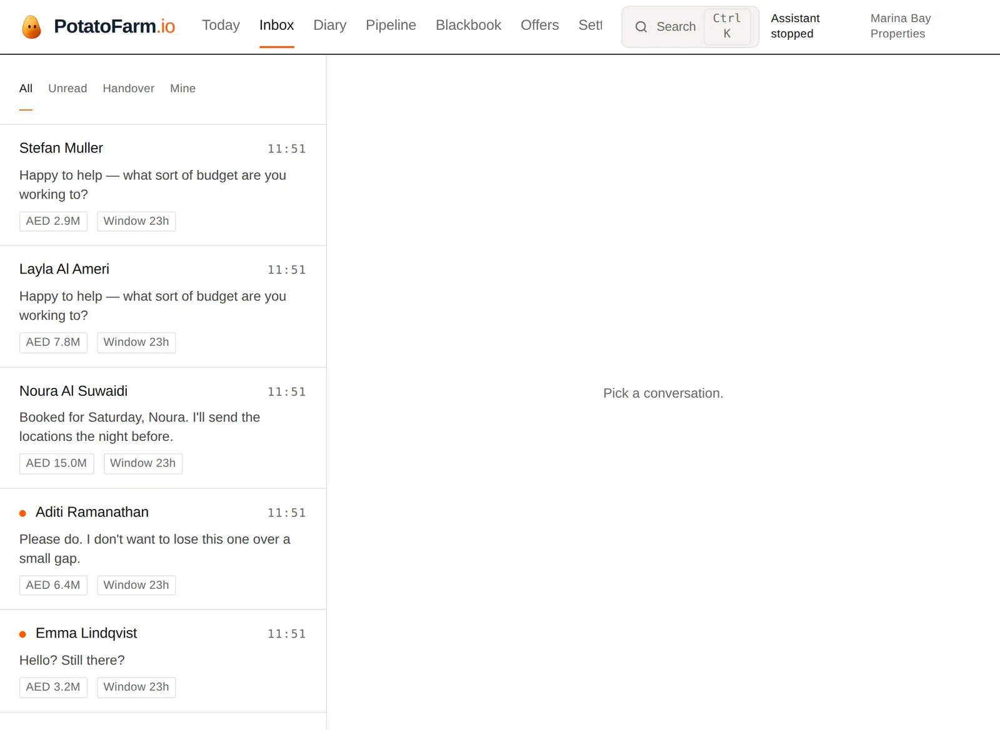
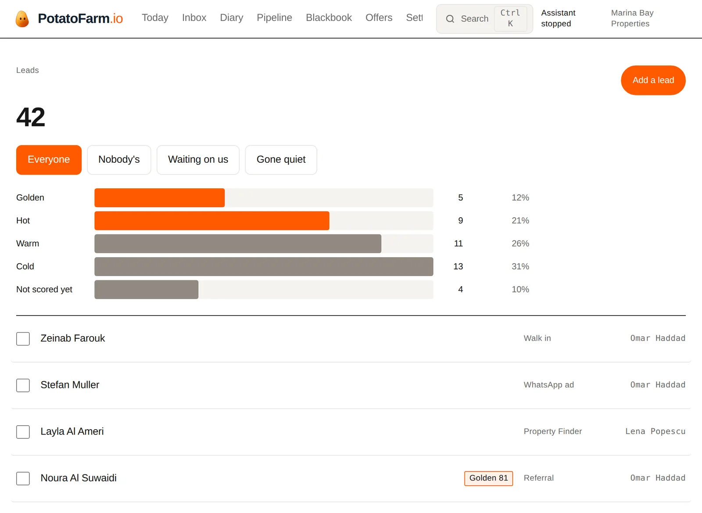

What it does, and where it stops.
Three jobs done properly, and a clear line where a person takes over. Most of the work in building this went into the second half of that sentence.
Seconds, from your number, in their language.
A buyer messaging at eleven at night gets an answer at eleven at night. Not a bot greeting — an answer to the question they asked.

From your listings only
Every fact it states is one you have entered. Bedrooms, price, community, service charge, permit. If the answer is not on the record it says so plainly and brings in an agent, rather than guessing something plausible.
Arabic and English
It replies in whichever the buyer used. No language selector, no "for English press one" — it reads the message and answers it.
Inside Meta's rules
WhatsApp only permits free-form business replies within 24 hours of the customer's last message. Outside that window a message is accepted and silently never delivered. We track the window and show it on every conversation.
Yours, asked the way you would ask them.
You write the qualifying questions during setup. That is the part that makes it sound like your brokerage rather than like software, and it is the step we will not let you skip.
It asks them in conversation, in whatever order the exchange allows, and stops the moment it has what it needs. A buyer who volunteers their budget in the first message is not asked for it again.
Everything captured appears on the lead before your agent opens the conversation.
Answers, on the record.
Everything the conversation established, against the person who said it — with the score, and the reason for the score, in words an agent can argue with.

It hands over on purpose, not on failure.
A price negotiation. A complaint. A question about a neighbour, a school catchment, or whether the landlord will take less. Anything it is not certain of.
In every case it stops, tells your agent why in one line, and the conversation is waiting for them with all of it already read. The buyer is told a colleague is picking it up — not left mid-sentence.
The half of the deal most systems ignore.
In Dubai, "won" is roughly the halfway point. Deals die between the Form F and the transfer, and almost always for the same reason: a step with a two-week lead time started one week before it was needed.
From the completion date
The Form F names a date, and missing it can cost the deposit. Everything is planned back from it rather than forward from today.
Before it is too late
A mortgage purchase where the seller also has a mortgage typically needs about 47 working days. A 30-day Form F is roughly 22. We say so before anyone signs.
The steps nobody remembers
The seller's liability letter. Service charge clearance before the NOC. The two things that quietly add three weeks and are discovered in week four.
What people ask before the first call.
Will buyers know it is not a person?
Many will, and it does not pretend otherwise. It never claims to be a named agent and never says it is human if asked directly. What matters to a buyer at eleven at night is that somebody answered — and the handover to a real agent happens fast enough that the distinction stops mattering.
What if it says something wrong?
It answers only from your listings, so the common failure — inventing a fact about a property — is structurally prevented rather than discouraged. If it does get something wrong, there is a stop button on every screen that halts every conversation immediately, and a full record of everything it said.
Does it replace an agent?
No, and a product that claimed to would be lying. It covers the ten minutes after an enquiry arrives, which is the window your agents cannot cover and your competitors are winning in. Everything that requires judgement stays with a person.
What does it cost?
$70 per agent per month, invoiced in dirhams at AED 257 plus 5% VAT. Each agent brings 60 conversations, pooled across the team; past that it is 35 fils each, about 9 US cents. There is no tier where the assistant works better and nothing held back to make a bigger number look reasonable. Fourteen days free with no card first, because the first week is us measuring your current response times rather than showing you features.
What happens if we switch it off?
Enquiries still arrive and still appear in your inbox. Nothing is lost and nothing stops working — the assistant simply stops replying, and your team answers as they did before.